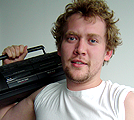

User interfaces do not just happen. We had a little chat with the guys whose work is dedicated to the NetBeans GUI and the many small but important things in the life of a developer that we are often not aware of.
Jirka Mzourek:
Our team, located in Prague, is responsible for the user experience design of Sun development products (NetBeans, Java Studio Enterprise, Java Studio Creator and Sun Studio). I manage this team for 2 years, but I work on NetBeans or NetBeans related stuff for more than 6 years.
Jirka:
I'll try to explain it by naming roles we have in the team:
Users Research — In our case, user research mainly means usability studies, surveys and interviews. The main goal is to gather data as base for our interaction design.
Interaction design — This means describing behavior and visual appearance of new features or changes. In NetBeans, each new feature or change is covered by a document called UI Spec. You can find most of them at http://ui.netbeans.org/. On netbeans.org, go to the community section, and click Teams, and then User Interface.
Visual design — Most of the icons in the IDE are by Leos Tronicek, our visual designer, who does the cool splash screens as well as all other visual aspects of the IDE.
Jirka:
Which parts? The xDesign team is involved in all parts of the IDE! :-)
Jano Rojcek:
The first involvement of our team, and also our first "success story", was the native look and feel in NetBeans IDE 3.6. Well, actually we were already involved in the consistency redesign of all dialogs for 3.5, but that kind of change is less noticable for users. Our changes in 3.6 however were noticed. This was a really good example of cooperation between designers and developers.
Then in 4.0, there was a major change how you used the IDE, not only the new sliding windows, but the whole project system was updated. The idea for the new project system was driven by engineers, Jesse Glick, and Peter Hrebejk. It was their brainchild, and they came up with the whole improved workflow. Then they came to us and we worked together on the wizards, the project tree, the menus, the project properties dialog... Again, it really shows how close cooperation with engineering is a crucial part of success.
Dusan Pavlica:
We have been involved in the Matisse project too. We discussed the right approach for the new GUI builder in NetBeans IDE 5.0 with engineering, because the old form editor was a bit obsolete. Then two possible approaches were on the table. There were intensive discussions about them, we evaluated those two concepts carefully in the Matisse team (by use cases, sketches, animations, prototypes) and chose the right one at the end, I think :-). I worked on features of Matisse from the user's point of view, and defined behavior and appearance in close cooperation with the form editor team and others in the xDesign team.
Apart from what was already mentioned, we can say our team has participated on the most visible parts of the IDE, even if some of them are small (e.g. redesign of menus, toolbars, Welcome screen, windows such as Navigator, Palette, Property Sheet, Output window, etc.).
Jirka:
Sure! Most of the NetBeans UI specifications, usability study reports, and all visual elements (including icons) are public.
To give you an example of our work: Last year, a user study showed that more than half of our users are using two monitors. So the user should be able to undock individual windows and palettes from the IDE and put them on the second monitor. So Jindra analyzed this use case, and then came up with this cool Floating Windows UI Specification.
Jano:
When we get a requisition to design the user interface (UI) for a feature, we first want to understand the motivation. Why we are doing that, what problem it tries to solve, we try to extract the usecase. We talk to each of the engineers about these examples, and try to fully understand all usecases. The primary usecase should be as easy as possible right out of the box. Then we come up with the UI to help the user to accomplish what they want. Writing UI specifications is an iterative process, the final 'spec' contains a detailed description of the usecases and of the UI. During this phase, we rely on IssueZilla a lot, and feedback is very valueable. We got lots of positive feedback for Matisse, the windowing system, and the project system.
Dusan:
The Evaluation of suggested designs is the most important part of our work. We need to get confirmation from engineering that each part of the UI specification is implementable and then we need to verify it with real users too. We use Flash prototypes often because they are great for the evaluation of concepts, for testing different approaches, and for usability testing in general. They can be put on a web site, so they are accessible to more users. Then we can collect feedback in a database and process evaluation results easily (a small example). I enjoy working on Flash prototypes that better demonstrate dynamic behavior, discussing them with the engineering team, and then seeing how they are going to be realized later.
An example of Matisse's main behavior and design is described in the GUI Builder design specification. There were two usability studies done in Prague (and one in Menlo Park). The first usability study was focused on an early Java prototype and a Flash prototype too. We tested some basic concepts such as drag&drop, resizing, moving, and the ability of components to snap to guiding lines. That prove of concept was very inspiring for us even it was the first version without many features.
Dusan:
I'm no longer in the Matisse team because I am now assigned to work with the Java Studio Creator team, but I can describe what is currently happening in the project. There is an official Matisse road map and features mentioned there look more than interesting. There will be improvements in layout design, grouping of components, better support of Swing components, importing from Java code, better categorization of components, context sensitive Help Assistant and others.
Data binding is the most valuable feature in my opinion, it will come with NetBeans IDE 6.0. It will allow users to connect UI components with data easily by drag&drop. Something similar exists in Java Studio Creator, a tool for visual web application creation, and when this easy-to-use concept is applied to Matisse, it will definitely be successful, this could again increase the amount of Netbeans users significantly.
Dusan:
You know, they are able to achieve nearly the same behavior and look in the Editor area, but the success isn't only about that.
It's often about small details and mainly how the GUI editor will be incorporated inside the whole IDE.
Then how easy the user will be able to create UI, and how quickly he will connect the UI of an application to his data sources.
Our engineers (Tomas Pavek, Jan Stola) cooperate really closely with the Swing team (Scott Violet) and the xDesign team in the US
(Ann Sunhachawee, Coleen Baik, Michael Albers), thus I think Matisse will always be one step ahead. And it's free.
Jano:
We do lots of usability studies for testing new designs. Observing real users working with the IDE is really eye-opening and helpful -- this cannot be replaced by UI reviews or heuristic evaluation. If you don't do it, you lose information. It costs time, but it's worth it. We use other evaluation techniques first, and later in the user studies, we still find new problems where users get stuck. Engineers observe user studies too, so they see and understand how users work. We get lots of input about our UI and the overall quality of the product concerning these kinds of small blockers, so we can fix them in time.

Jakub Franc:
I've got a background in psychology and its methodology. Interviewing users is only one part of my job. I use interviews in the early phases of research, other methods are usability studies, surveys, and customer visits. I ususally work together with an xDesigner who's an expert in the area I want to study.
Customer visits are very valuable, because you see real use cases in real environments with real people and real needs. I do surveys during the final steps of research, for example at JavaOne, either online or on paper. For usability studies, we now have a whole new lab in Prague, and we already did plenty of studies for NetBeans in the old one.
Basically, I conduct semi-structured interviews, this means certain topics have to be covered, but the participant can speak freely -- it's more like a conversation really, where I ask open-ended questions. I have skills in interviewing and studied and trained that.
For example for Subversion support in NetBeans, I recruited users, some users of NetBeans and some of other IDEs, who knew Subversion or other versioning systems. We asked them, how big is your team? What version control do you use? How do you use it? For what reasons would you switch to another version control system? Engineers where present too and it was very interesting for them. They found that people use the lock function a lot, while they had assumed that was low priority. It broadens the view of how people see the product. They saw and experienced real users with real problems, instead of just reading about it in a usability report.
Dusan:
The GUI Builder Matisse (NB 5.0) is definitely the most interesting in my opinion. Then the new look and behavior of the windowing system (NB 3.6) and features such as Sliding Windows (NB 4.0), the nice drag&drop manipulation with windows, too.
Jakub:
The Profiler UI, for example, that was my first assignment. I got tons of feedback in a survey where users had to answer 10 questions, like, do you use a profiler? If yes, how often? In which development stage? etc. Very interesting.
Leos Tronicek:
I'm in charge of the splashscreens and wallpapers, and all the icons in the IDE -- there's a couple of thousand of them. We just went through rebranding the icons to the new Sun icon style that we will use in the next release. Besides icons, I designed two visual editors in the Mobility Pack, the screen designer and the flow editor. For the Enterprise Pack, I designed the visual part of the XML Schema Design View (ABE), enhanced the BPEL Editor, and gave a facelift to the BPEL Mapper.
Jano:
I have a list of mostly small items with suggestions for usability improvements I'm working on. The list has four parts, productivity, good out-of-box experience, consistency, and look and feel.
Jindrich Dinga:
Right now I am designing Floating Window support for NetBeans 6.0, that you will be able to test from milestone 2 on. We were getting IssueZilla reports where users complained about the multiple monitor support. We determined the most significant use cases and we will test them in user studies. If you are interested in participating, and can come to Prague, get in touch! I also work on the fullscreen mode for milestone 2 of NetBeans 6.0, and we will improve the maximize mode based on user feedback, so you will be able to access the palette more easily. Another example is the redesign of the auto-update center for 6.0: The module manager and the update center will be merged together into one window.
Jano:
Yes, this is done in several stages over time. We want the homepage to be very easy to use — easy download, clear product description. We want to make sure that the NetBeans core values are visible on first sight. Many users also asked for more guidance to find the right tutorial in the support section, so we are improving that, too.
Leos:
Yeah, I just finished the new designs for netbeans.org homepage, download page, and support page. Next we'll talk with the webmasters about how to implement the designs, and decide on a new basic set of illustrations.
Jirka:
The best start would be Jakob Nielsen's homepage http://www.useit.com.
Then there will be a worldwide conference, World Usability Day, on November 14: Check their webpage http://www.worldusabilityday.org later on, to see whether there will be one in your city. Last year, we co-organized a local World Usability Day in Prague.
There are also a lot of special interest groups on Computer-Human Interaction under the ACM. In the Czech Republic, we run public meetings of SIGCHI with the local Czech Technical University and the Dobry Web project, see http://www.sigchi.cz for details.
Jirka:
Of course we read Issuezilla reports and follow UI-related threads on the nbusers mailing list, etc. But if you want to get involved even more:
If you are located in Europe or in the California Bay Area, we would like to talk to you! In the ideal case even to your co-workers. We can discuss your overall experience with NetBeans as well as get input from you for our future designs. If you are located somewhere else, we can talk to you on the phone.
If you are located in Prague (or willing to come to Prague), we quite frequently conduct usability studies and we are always looking for new participants. You even will receive from us some money and a small gift.
You can also take part in our NetCAT program.